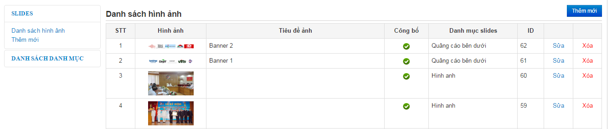

XI. Quản lý Slide
-
Từ màn hình quản trị vào F.Tiện ích -> 1.Slide hình

-
Ta chọn menu Thêm mới phía bên phải để thêm 1 hình cho slide
-
Trong màn hình thêm mới ta điền đầy đủ thông tin của hình ảnh
-
Phần Danh mục slide sẽ chứa 2 slide chính là Sldie home và slide đối tác.
-
Phần đường dẫn ta có thể điền đường dẫn của 1 bài viết hay 1 đường link từ website bất kỳ thì khi ra ngoài website nhấp chọn vào hình nó sẽ tự động link tới trang đó.
-
Sau đó nhấn lưu để lưu lại.